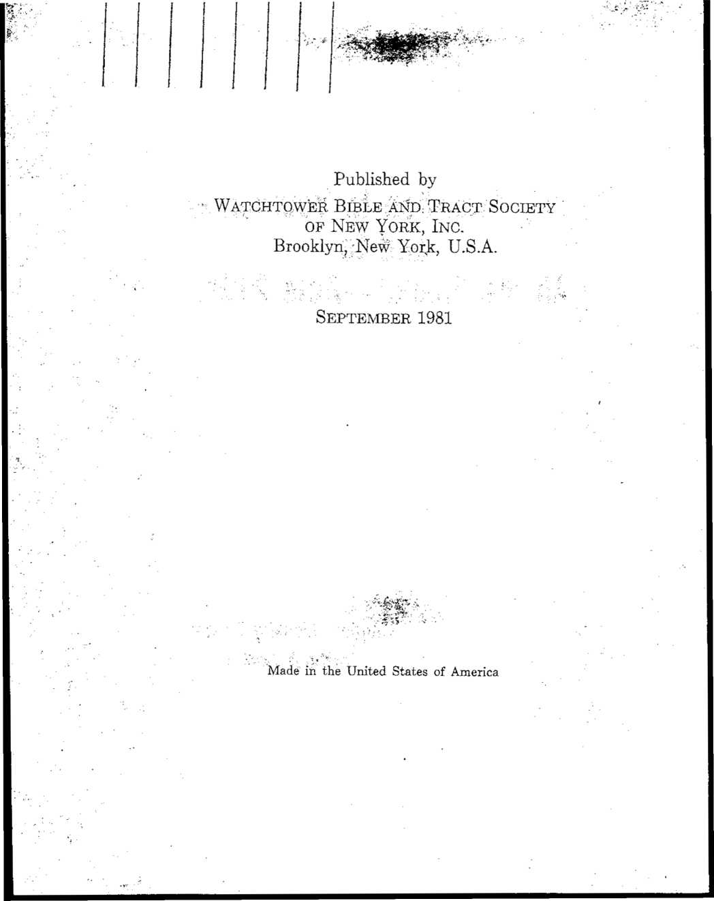

“Pay Attention to Yourselves and to All the Flock.”—Acts 20:28.
Kingdom Ministry School Textbook (Ars81)
L Explanation of School Course
(Introduction)
The material in this Kingdom Ministry School Textbook (&s81) has been prepared for use in training and benefiting Christian overseers. In keeping with our objective it retains the title of the previous two textbooks, “Pay Attention to Yourselves and to All the Flock.” —Acts 20:28.
The 1981-1982 Kingdom Ministry School Course for overseers will include a lecture at the beginning of each day. As was true with the two previous courses, the program covers 15 hours of training and instruction. Following is the 1981-1982 schedule.
Conducted by Instructor
|
Opening Comments . |
hour |
A | |
|
Lecture |
hour |
B | |
|
Unit 8(a) (fes81) . |
3 |
hours |
A |
|
Unit 8(b) (fes81) |
3 |
hours |
B |
|
Unit 8(c) (hs81) |
1% |
hours |
A |
|
Lecture |
% |
hour |
A |
|
Unit 9(a) (/?s81) |
3 |
hours |
B |
|
Unit 9(b) (&$81) Concluding Talks by |
3 |
hours |
A |
|
Instructors |
hour |
B & A |
TOTAL 15 hours
KINGDOM MINISTRY SCHOOL COURSE
■ / i • ' • • .. Page
Unit 8 ; ■ • ■. ■ ■ '■ '•■■■ '■
(a) Jehovah’s People Theocratically Organized
. ' for 'His Name (Acts 15:14) .
. (b) Under, “the Law of'.the ..Christ” (Gal, 6:2) . 144
•(c) Pulfilling, and Glorifying Our. Ministry
Unit 9 , .. 1
(a) Handling Cases of Wrongdoing '
: (b) Judging with Righteous Judgment ’ 173
TO THE STUDENT: The information that is found in this textbook has been prepared under the direction of the Governing Body. The course provides a basis for Scriptural discussion of material that deals with features of God’s law and its administration, judicial matters and a review of the ministry, with special emphasis on the role of overseers who are expected to take the lead. It is strongly recommended that each overseer carefully read over the assigned portion for each day and be prepared to share in classroom discussions. The instructors will analyze with the class the examples provided for them by the Society and which are called for on specific points. Where it is possible, instructors will see that the textbooks are made available ahead of time. While some of the material in this course is of a serious nature and may seem weighty, do not be unduly anxious or apprehensive. Remember, we are all interested in helping one another, to the end that we may ‘hold firmly to the faithful word’ and show genuine concern for the flock by setting a good example.—Titus 1:9; 1 Pet. 5:2, 3.
TO THE INSTRUCTORS: It has been found practical for two instructors to conduct each school for elders. Wherever possible, arrangements should be made for this to be done. Both instructors will be present during each of the class sessions. As a rule, instructors will alternate as classroom chairman, each conducting the classroom sessions as indicated on page 132. They will share in giving the concluding talks for the final half-hour of the special school. When the school is conducted on the weekend, fifteen-minute recesses are suggested during the mid-morning and mid-afternoon sessions of each day.
There are a few portions in Unit 8(c) that will allow ' for some in the class to appear before the group to explain, discuss or demonstrate certain points that are called for in this unit of instruction. Advance notice of such assignments will be given out by the instructor to some of the students so that they can be properly prepared and have something practical and meaningful to present.
The scheduling of the school sessions can be somewhat flexible where this appears necessary. In most cases where a weekend is set aside for the school program, eight hours of instruction will be featured on Saturday and seven hours on Sunday. The Saturday-morning session would run from 8 to 12, and following a one-hour break for the noon meal, the afternoon session will resume at 1 and run until 5:30 p.m. On Sunday the morning session could begin at 8:15 and run to 12 noon. After a one-hour noon break the afternoon session would resume at 1 and conclude at 4:45 p.m. Where the school is conducted during the five evenings of a week, the course could be divided so that there would be about three hours of classroom training and instruction each evening. It will be up to the branch office in each country to schedule school sessions in harmony with what may be the most convenient and best for the brothers according to local circumstances.
NOTE
This Kingdom Ministry School Textbook (&sBl), together with previous issues (/?s77 and hs79), are provided SOLELY for the use of traveling overseers and congregation elders, and are not to be given or loaned out to other persons, including family members. New elders will receive a copy of this latest textbook from the circuit overseer. Elders who are deleted for any reason should turn in their copies of these textbooks to the current chairman of the local body of elders, who will, in turn, pass them on to the circuit overseer.
Jehovah has an earthly organization to accomplish his work, an organization that appreciates the importance of his name and in every way seeks to honor it. Some have said, all that is necessary is for each Christian to enter a personal relationship with God and then seek to maintain such in faithfulness. Such view is contrary to Biblical historical facts. Jehovah brings together his chosen ones as an organized people, as in the case of natural Israel, directed by an appointed leadership to administer God’s will. (Ex. 19:5, 6) Ancient Israel served as a pattern indicating that the worldwide brotherhood of Jehovah’s Christian witnesses in these last days would also be an organized, God-governed people. (Heb. 10:1) It requires an orderly arrangement to gather the “great crowd” from the four corners of the earth, so that they may declare unitedly: “Salvation we owe to our God, who is seated on the throne, and to the Lamb.”—Rev. 7:9, 10; Isa. 11:10.
Today Jehovah’s Witnesses are a distinct people.
Gathered from all nations, yet unified as one flock.
Form an international association of brothers. (1 Pet. 2:17; 5:9)
Have learned to speak in one language of truth, calling on the name of Jehovah,, recognizing his authority and way of doing things. (Zeph. 3:9, 13)
Christian congregation of anointed ones on earth operate as “God’s household” with a “great crowd” of helpers. (1 Tim. 3:15)
Members of a household serve together as an organization.
Over past 100 years a global association of more than 43,000 congregations has developed.
Local congregations not under democratic control but God-governed, theocratic.
All congregations under one administration directed by Christ Jesus. (Heb. 3:6)
“Administration” translates Greek word oikonomia (Eph. 1:10), which basically means “household (organizational) management” of affairs. (See The Watchtower, October 15, 1974, pages 616, 617.)
Congregations receive guidance from Jehovah through Christ Jesus, his appointed Administrator. (Heb. 1:1, 2)
As Jehovah’s Chief Servant, he brings about justice. (Matt. 12:18)
Those of the household, as well as all those who work closely with it, must be “holy.” (Eph. 2:19; 1 Pet. 1:14-16)
“Holiness” includes cleanness, purity, separateness.
Involves also love of justice and mercy. (Ps. 33:5; Jas. 2:13; 3:17)
As Statute-Giver, Jehovah sets righteous standards and delegates authority to enforce them. (Isa. 33:22)
His laws are stated in our guidebook, the Bible. (2 Tim. 3:16)
Why must we recognize this form of theocratic governance? (Isa. 2:3)
Administration of laws entrusted to His anointed king. (Isa. 32:1)
Enthroned since 1914, ruling ‘in midst of enemies.’ (Ps. 110:2; Dan. 7:14)
Invisible control exercised from heaven.
Uses earthly visible agency.
Evidenced by over two million subjects submitting to Christ’s kingship. (Phil. 2:9-11)
Such invisible administration requires visible representatives.
Visible anointed remnant entrusted with all Master’s belongings. (Luke 12:42-44) ■
“Steward” class faithful in dispensing “food.”
Overseers serve as earthly representatives, under direction of the “steward” class. (Isa. 32:1, 2)
Theocratic control requires recognition of this orderly arrangement. (Zech. 8:23)
Are we assured guidance until the ‘conclusion of the system of things’? (Matt. 28:20)
GOVERNING IN RIGHTEOUSNESS
REQUIRES OBSERVANCE OF JEHOVAH’S LAWS AND PRINCIPLES
Laws are defined as rules of conduct. Necessary for order. (Gal. 6:16)
A God of order. (1 Cor. 14:33) God’s laws are perfect. (Ps. 19:7)
Laws are based on principles that are made enforceable by an organization.
Principles are settled guidelines for conduct based on fundamental truths. (See The Watchtower, September 1, 1952, page 407; September 1, 1957, page 524.)
Example of principles based on fundamental truth:
Fundamental truth: Jehovah God is the Sovereign Lord of heaven and earth. (Acts 4:24)
Principles based on the above fact, truth:
We owe Jehovah full obedience in everything. (Jer. 7:23; 1 Sam. 15:22)
Where there is a conflict, we must obey God as Ruler rather than men. (Acts 5:29)
Observation: Principles are eternal, while rules may apply to limited times or conditions.
Need laws, judicial decisions and instructions from Jehovah through various levels of household (organizational) management. (Gen. 9:1-7)
1. Jesus Christ, the Kang and High Priest. (Matt. 28:19, 20)
2. “Faithful and discreet slave” and its governing body. (Matt. 24:45-47; Acts 15:23, 28, 29; 16:4)
3. Congregation elders. (Heb. 13:17)
4. Husbands and parents. (Eph. 5:22, 23; 6:1, 4)
Human overseers must be careful that their instructions do not violate God’s Word.
Should imitate Jesus. (John 5:30; 12:49)
Otherwise, lawlessness prevails. (Matt. 24:12)
Justice is the administration of what is right in a fair and impartial way. (Lev. 19:15)
Jehovah manifests justice in all his dealings. (Deut. 32:4; Heb. 2:2-4) ■ ■
Justice is illustrated by a plummet line, which must be fully adhered to, without variation. (Amos 7:7, 8; Zech. 4:10)
Justice involves more than deciding right or wrong; it is balanced with mercy where warranted. (Ezek. 33:14-16) '
Decisions of elders must reflect justice. (Isa. 32:1)
Mercy is not only the withholding of punishment when justly due, but also an expression of kind consideration or pity that brings relief to those who are disadvantaged, in need of help, {ad p. 1139)
Mercy needed to temper justice.
Mercy brings relief when circumstances allow for it.
Mercy also involves giving needed correction and discipline.
Mercy takes into consideration motives, provocation, willingness to confess, temptation, mental and emotional condition, past conduct, present attitude, etc., of the offender. Must guard against automatic or “letter of the law” application; there are some areas not specifically defined.
Applying Christian law in justice and with mercy requires:
1. Decisions that are fair, equal to the need.
2. Allowance for mercy when circumstances are extenuating.
3. Enforcing with impartiality laws that carry sanctions. (Deut. 1:16, 17) Punishment applied should fit the violations.
4. . Getting all the facts before making a decision. (Prov. 18:13)
5. Avoiding becoming involved in personal disputes. (Prov. 26:17)
6. Expelling (by disfellowshipment) those who flout God’s household law and contaminate the congregation. (1 Cor. 5:9, 10; Titus 3:10)
7. Making clear to disfellowshipped ones that, upon displaying works befitting repentance, turning around, reinstatement can be applied for. (2 Cor. 2:6-8)
Every case is different and must be judged on its own merits.
Some persons have wrong tendencies and may just need direction as to the right way to go or how they should correct their course. (Mark 6:34)
Elders need to be trained to become righteous judges.
How is this accomplished?
Use directions provided by the Society. (See Kingdom. Ministry School Textbook, 1977, Unit 4.)
Be sure all decisions are solidly based on the Scriptures. [Example: Elders wisely make a practice of carefully reviewing Units 4 (a) and (b) in the /?s77 and Units 9 (a) and (b) in fe81 and the scriptures cited before handling any judicial matter. They have found that when they rely on their memory of the past review of this material, they overlook important points. They know that the lives of their brothers are precious, so they cannot afford to be careless.]
Elders serving on a judicial committee should be discerning and trustworthy men.
The body of judges need to be consistent, firm, loving. Work interdependently as a body. (1 Cor. 12:21-25)
They should listen to fellow members on judicial committee, benefit from one another’s mature thinking.
God’s spirit can direct any one of the elders to make a valuable contribution to the thinking of the judicial body. (Eccl. 4:9; Prov. 27:17)
When questions arise, they should not be hasty in deciding. Do research in the Society’s publications. Then, only if necessary, write the Society.
Jehovah and Jesus deal impartially and justly with all. Elders serving as a body of judges should imitate their example. (John 5:30; 8:28; Lev. 19:15)
May Jehovah’s people as a theocratic organization continue to grow in righteousness, exercising justice with mercy. (1 Sam. 12:22)
J
Jehovah’s people today are not under the control of the body of law known as the Mosaic law of ancient Israel. (Col. 2:13, 14) Paul showed that since there has been a change in the priesthood from Aaron to that of Jesus Christ in the manner of Melchizedek, Christians are under a new legal arrangement of control. (Heb. 5:4-6; 7:12) Some rules of conduct found in the old law of Moses have been restated under the law of the Christ and are enforceable upon Christians. (Acts 15:19-21) Other rules of conduct from the law of Mdses with their underlying principles, though not enforceable in the Christian congregation, are nevertheless useful to Christians as they walk in the way of holiness. (Jas. 2:8,. 9) It is well for elders to consider some of these guidelines that are intended to protect the Christian congregation and keep it clean in Jehovah’s sight.—Eph. 5:25-27.
Christians are not under the Mosaic law, but under “the law of the Christ.” (Gal. 6:2; 1 Cor. 9:21)
Consists of a body of rules for Christian conduct. (Gal. 6:16)
This “law of the Christ” embraces the whole scope of a Christian’s life and work and focuses attention on:
144
1. Our relationship to Jehovah.-(Matt. 4:10; 22:37; 1 John 5:3)
2. Faith in Jesus Christ and submission to him. (Col. 1:18; 1 John 3:23)
3. Our relationship with fellow Christians. (John 13:34, 35; 1 John 3:16-18)
4. Our obligations toward unbelievers. (Matt. 24:14; Gal. 6:10; 1 Pet. 2:13, 14)
Law of the Christian system of things involves the heart. (Jer. 31:33; Heb. 10:16) .
(1) Gambling
Why should Christians avoid gambling in all of its various forms? (See Isaiah 65:11.)
What view do Christians take of such traits as greediness and covetousness, generally manifested by gamblers? (See Romans 13:9, 10; 1 Corinthians 6:9, 10; Colossians 3:5.)
Such persons who do not respond to counsel and help could be disfellowshipped from the Christian congregation.
Additional bad results from gambling and association with gamblers give true Christians further reasons for avoiding it. (1 Cor. 15:33; w72 pp. 593, 594; w80 9/1 pp. 29, 30) .
Why must one guard against the view that petty gambling solely for entertainment is harmless? (See Galatians 6:7, 8.)
If a business concern gives out prizes to customers by drawing out names from their customer list, it may not be wrong to receive such prize, if no money has to be paid for participation. But other factors need to be considered.
The language used in advertising the contest, or the kind of sponsors, may involve elements with which a Christian would not want to be identified, for personal reasons, or for fear of stumbling others. (Rom. 14:21; 1 Cor. 10:31-33; g75 7/8 p. 28)
Consider example.
(2) Activities Illegal According to Caesar’s Law
God’s Word counsels all Christians to be law-abiding. (Matt. 22:21)
What must one do when human laws conflict with or prohibit what God commands or when they require things that God forbids? (See Acts 4:19, 20; 5:29-32.)
Why be careful when making purchases from someone engaged in an illegal business, or if such a person seeks to employ your services, or if you personally see opportunities to engage in business or practices prohibited by Caesar’s law? (See Romans 13:1-7; Titus 3:1; 1 Peter 2:13, 14.)
How does the above Scriptural counsel protect a Christian and serve as a guide for his conscience?
If the elders learn of illegal activity or of some serious crime on the part of a congregation member, the law on ecclesiastical privilege in many countries does not require elders to report the offender or the offense to the secular authorities.
In cases involving the breaking of God’s law, elders must give consideration to the case.
Would one approaching baptism who was guilty of illegal activities before coming to a knowledge of the truth be required to settle these things with the authorities prior to baptism? Why not? (See Philemon 15-18.) .
Neither would a thief be required to make restitution to all from whom he stole before baptism, although, in some cases, his conscience may move him to do so. (See Luke 19:8.)
The blood of Jesus Christ covers the sins of such new ones. They may get baptized. (Isa. 1:18; 1 Tim. 2:5, 6; 1 John 1:7)
(3) Legal Matters Involving Secular Courts
While all legal cases between brothers should be brought to the attention of the elders (1 Cor. 6:1-8), there are legal matters over which the congregation does not have authority. These can be taken to secular court for judgment, such as: .
a. Issuing a divorce decree when Scriptural basis exists.
b. Obtaining insurance compensation.
c. Being listed, among creditors in bankruptcy procedures. •
d. Foreclosing liens.
e. Probating wills.
However, 1 Corinthians 6:1-8 covers a wide range of domestic and personal disputes that should be settled by the congregation elders.
Here note some examples:
a. If a worldly creditor sues a brother who is not guilty of wrongdoing, it might be necessary for the brother, for his own protection, to file a countersuit even if it might include other spiritual brothers in the action.
b. If a dedicated person takes legal action against another dedicated person, it would not be a violation of 1 Corinthians 6:1-8 for the one being sued to defend himself, or to counter-sue. (This is true whether the matter was first taken before the elders or not.)
c. If a person is injured in an automobile owned by a spiritual brother, it might be necessary to sue the brother in order to obtain insurance compensation.
If the brother is not insured, the injured brother may share responsibility for his own injuries. To sue under such circumstances could possibly violate the spirit of what is counseled at 1 Corinthians 6:1-8.
In exceptional cases each individual must make his own decisions.
There may be other ■ circumstances where the congregation would need ho take action. (See w73 11/15 pp. 703, 704; w77 3/1 pp. 146-148.)
(4) Neutrality (John 17:16).
Jehovah’s Witnesses are neutral with regard to' the political and military affairs of the nations, (ms “Neutrality”)
They do not interfere with what others do as to voting in political elections, running for or campaigning for political offices, joining the military, etc.
Since true dedicated Christians are “no part of the world,” if one pursues a course in violation of his Christian neutrality, he disassociates himself from the neutral Christian congregation. (John 15:19; 17:14-16)
It would be a kindness for the elders to talk to one who they know is thinking about taking such a course, since his plans may have been made in ignorance. .
If the individual pursues, this course regardless, of the ■ proffered help, he thereby disassociates himself, and his card would be removed from the file of active associates. , . . . .. .
An announcement is usually made that the individual has withdrawn from the congregation, and the person can be told orally about his position. Persons in the congregation that might be visited by the disassociated person can be informed orally, and the individual treated as one disfellowshipped.
If a government requests temporary use of Kingdom Halls or equipment, in times of emergency, it would not be a violation of neutrality to comply. In some lands, all individuals are required to build roads or work in the field. Where this is not a form of military service, but is viewed as a tax, there would be no objection, as long as the work itself is not in violation of Bible principles. (Matt. 5:41; 22:21)
(5) Self-Defense
By following balanced Bible counsel, Christians can usually avoid getting into situations that might involve physical acts of self-defense. (Prov. 15:1; 17:14; 26:17)
If assaulted, a Christian could ward off blows, or even escape from the attacker by temporarily incapacitating him.
A Christian woman threatened with rape should resist by screaming and physically resisting. (Deut. 22:23-27; 1 Cor. 6:18) Other details are given in w68 6/1 pp. 345-350; g73 4/22 pp. 16, 17.
It is not in harmony with the spirit of John 13:35 or Isaiah 2:4 for a Christian to learn karate, judo or other martial arts. (g75 12/8 pp. 28, 29)
A brother would be disqualified as an elder or ministerial servant, if he took up the study of and practiced these violent measures. One publicly advocating such could be handled in line with 2 Thessalonians 3:13-15, or in accord with the judgment of the local elders. (See w81 7/1 pp. 30, 31 on professional boxing where it is shown that if one continues in such course he would be excluded from the congregation.)
(6) Sexual Conduct
While the Christian congregation is not in a position to direct individuals as to all sexual matters concerning the marriage bed, individuals can, however, be advised that in their intimate relations, as in all other aspects of Christian life, they need to display kindness, love and concern for each other.
Each one should have a hatred for all perverted practices, including homosexuality, bestiality, oral sex and the like. (Lev. 18:22, 23; Ps. 97:10; Amos 5:15; Rom. 12:9; Eph. 5:3, 10-12; Col. 3:5, 6)
Persons should be urged to act in such a way as to leave them with a clean conscience, and the marriage bed undefiled. (Heb. 13:4)
Consider example.
Summary
For our protection and spiritual security it is essential to be obedient to “the law of the Christ.” Only in this manner can those who desire to be guided by Jehovah’s word of truth walk unitedly and harmoniously in the path of righteousness.
This makes it incumbent upon us to lay aside personal or preconceived ideas of what is right and wrong, and wholeheartedly accept Jehovah’s directions.
In this way we are kept separate from the world and can prove ourselves loyal to the Sovereign Lord Jehovah and his king Christ Jesus.
(Page for additional student notes)
Serving as a minister (diakonos) of God is an honorable and dignified assignment. In the Christian Greek Scriptures the noun diakonos is used in three different ways or senses: (1) Serving in a secular sense such as a household servant; (2) in a congregational sense such as a ministerial servant; and (3) in a broad sense referring to anyone who performs sacred service to God. Diakonos is translated “minister” in several languages. All active, dedicated servants of God, whether of the anointed or of. the “other sheep,” male or female, may lay claim to being ministers. As such they , serve as ambassadors or envoys of the Kingdom government. Paul was speaking of this lofty service when he wrote: “I glorify my ministry [diakonia]” (Rom. 11:13) The Word “glorify” includes such meanings as “honor,” “make much of,” “take pride in,” “magnify,” “lay great stress on” and “prize.” This helps us to have the right evaluation of our assignments as God’s dedicated ministers.—See w81 3/15, pp. 14-29.
(See English Watchtower of March 15, 1981.)
How does one become an ordained minister? (See pages 15, 16.)
Can one who works at a secular job be an ordained minister? (See pages 26, 27.) Scriptural examples. (See page 29.)
How can such one glorify and fulfill the ministry?
Does fulfilling one’s ministry reduce anxiety and personal problems? (1 Cor. 15:58)
Can one glorify his ministry in unproductive territory?
Whose responsibility is it to bring the increase, and how does this knowledge keep us content when results are few? (1 Cor. 3:6)
Overseers charged to “pay attention ... to all the flock.” Subject under discussion was Paul’s house-to-house ministry, how he bore “thorough witness” and was thus “clean from the blood of all men.” It was within this context that he spoke at Acts 20:28. (Note Acts 20:20, 24, 26.)
Christ set example for elders in fully accomplishing ministry.
Preaching was his principal work. (Matt. 4:17) This is what he trained his followers to do. (Luke 8:1; 9:1, 2; 10:1, 8, 9) Undershepherds, yoked to Jesus, should have same goal. (Matt. 11:29, 30; John 18:37) (See English Watchtower of July 1, 1976, pages 410, 411.)
What other responsibilities make this a problem for some elders?
Have two elders, assigned in advance, explain how taking the lead in the field ministry and still spending time with their families sets a good example.
Name some advantages of making shepherding calls after field service. .
Give examples of how shepherding calls can be made while caring for other responsibilities.
Have a group of elders relate before the class the good results of their being observed working consistently with the publishers in the field.
How is the congregation affected when elders and/or their wives are able to pioneer or occasionally auxiliary pioneer? (2 Cor. 9:2b)
Second Timothy 4:2 includes counsel to elders on handling problems in a congregation; even under such circumstances, what is not to be neglected according to verse 5?
According to Hebrews 13:7, whose is the faith to be imitated? (Phil. 3:17)
For whose blood do overseers show concern when they take the lead in the field ministry?
How is the overall ministry of the congregation to be viewed as we draw closer to the end of the system of things? (1 Pet. 4:7-11)
Discussion between two elders on the need to help others keep active in glorifying Jehovah and in the ministry. (4 min.)
Include the following points: (1) Good personal example in field ministry (1 Tim. 4:12b); (2) should meet requirements outlined by Jesus at Luke 12:48b; (3) should remember faith dead without works .(Jas. 2:14-26; cj, p. 82, par. 1); (4) in association with brothers and sisters, speak positively, not negatively, about the field ministry and its value;
Elders need proper attitude toward the work and the results obtained, if they are to help others keep active.
Jesus gave us proper view regarding our attitude. (Matt. 10:12-14) ’
Apostle Paul also outlined the need to do what we are commissioned to do, namely, planting and watering, or, stated another way, preaching and teaching. (1 Cor. 3:6, 7)
Evident, .when it comes to results, it is God that brings growth.
This attitude vital if we are to be successful. Otherwise, tend to become downhearted, equating success with number who accept the “good news.”
How do we know this is right attitude? Consider results in Noah’s day, in Sodom and Gomorrah, from Jeremiah’s preaching. Faithfulness in doing as commanded meant success, though tangible results few. (Matt. 7:13, 14)
Consider this modern-day example and whether those a part of it are successful: In one Moslem country after 32 years. of preaching and teaching, growth has been from 23 Kingdom proclaimers to 188, an average of five new ones each year. Some missionaries there for 20 and more years helped perhaps 10 or so; others there seven to nine years helped no one take a stand for truth. Successful? Yes! The growth lies with Jehovah, who reads hearts. Does not ask us to do the impossible, only to sound warning, preach and teach.
Apostle Paul spoke of himself as a ‘public servant of Christ Jesus, engaging in the holy work of the good news of God.’ (Rom. 15:16)
That is our work. We are public servants, engaging in holy work of the good news of God. To be successful we need to carry on this work and encourage others to do so also.
By recommending ourselves as God’s ministers we reap benefits and blessings now and in trying times ahead. (2 Cor. 6:3, 4; 1 Pet. 3:15)
Generally, our field activity performed in face of mounting problems. (Rev. 12:12) Will continue to need holy spirit to keep on.
Difficult days ahead. Some of the generation of 1914 will see the “year of goodwill on the part of Jehovah” end; then the “day of vengeance on the part of our God” will be upon us. (Isa. 61:1, 2; Matt. 24:34; Rom. 9:28; kc p. 140)
What does this mean? Even after the despoiling of Babylon the Great, Jehovah’s servants must steadfastly carry on with proclamation, not of “goodwill” but of “vengeance.” (w81 3/15 p. .23, par. 15)
Now is the time for elders to “carry on as men.” (1 Cor. 16:13,14)
Let us fulfill and glorify our ministry!
(Page for additional student notes)
Wrongdoing dates from man’s rebellion in Eden. We have Jehovah’s example of prompt action in handling the case. (Gen. 3:8-19) How are cases of wrongdoing handled today? Appointed elders serve as qualified judges:
(a) To keep out spirit of the world. (1 Cor. 2:12;' Eph. 2:1, 2)
(b) To readjust or reprove wrongdoers. (Titus 1:9)
(c) To preserve the cleanness of the congregation by removing unrepentant wrongdoers. (1 Cor. 5:7, 13)
What qualifications must elders have to care for this responsibility? (Deut. 1:13, 16-18) Heavenly wisdom, good judgment, impartiality; must be acquainted with Jehovah’s righteous laws and principles.—Ps. 19:7-11.
Individual elder, or elders, who may be informed of wrongdoing approaches presiding overseer, who in turn arranges for meeting with body of elders.
Body of elders now determines whether accusation gives evidence of having substance. Is judicial committee necessary? (ksll, p. 68, par. 1)
If committee is needed, body determines which elders should serve and also designates chairman, (km 9/77, pp. 5, 6)
160
Chairman of judicial committee invites accused to meet with them. (fes77, pp. 68, 69)
If he repeatedly fails to appear, action should be taken if there is sufficient evidence. (fes77, p. 69)
Conducting the Hearing;
Open with prayer.
Chairman states reason for meeting and invites accused to make personal statement.
Present witnesses, unless wrongdoer confesses.
Committee probes in effort to establish facts and ascertain attitude of accused. Is there evidence to establish serious wrongdoing? Isolate specific offenses and evidence available.
When it is appropriate, dismiss wrongdoer and carefully review evidence and attitude of accused.
Has accusation or charge been established?
If so, is wrongdoer repentant? There must be works befitting repentance. If repentance is manifest, how was it demonstrated?
Depending on whether guilt established and repentance shown, determine whether reproof or disfel-lowshipping necessary. If in doubt, convene at later date. Seek Jehovah’s guidance and wisdom through prayer.
When decision is finalized, inform individual orally. Inform of his or her right to appeal and steps necessary for future reinstatement, (km 1/80 p. 4) If appeal not made within 7 days, inform congregation. If appeal is lodged within the alloted time, no announcement is made. . •
/MS'
When disfellowshipping action is taken, notify Branch Office, supplying the necessary details as outlined in /?s77, page 62.
Where appointed servants or pioneers commit serious wrongs, the Branch Office should also be notified, even if no disfellowshipping ensues, (or, p. 170, par. 3)
Prepare written summary of case that can be put in an envelope and placed in congregation file. (See letter dated April 12, 1978, addressed to “All Bodies of Elders.”)
What is Scriptural view on reporting serious wrongdoing? (Lev. 5:1; Prov. 28:13; 29:24; compare 1 Corinthians 1:11.)
Consider example.
Not every case of wrongdoing requires a judicial committee.
[Example: A highly respected elder and a sister in the congregation failed to put in writing a business transaction. Each later charged the other with lying, slander and fraud. The body of elders wanted to convoke a judicial committee to act against the sister, siding with their fellow elder. The matter was handled in line with Matthew 18:15, 16 with the help . of a traveling overseer who provided counsel not to get involved prematurely. Judicial committee never had to come into picture.]
I
163 Judicial committee not automatically formed even when one is accused of serious sin.
What should be done if there is only one witness to a serious sin?
Witness should confront the accused to encourage him to confess.
If there is no response, one or two elders can discuss the matter with the individual. If he denies it, leave matter in Jehovah’s hands. (1 Tim. 5:19, 24, 25)
If there is another witness to the same type of sin on the part of the accused person, this would be basis to convoke a judicial committee.
Why is it important to let the accused FACE his accusers?
Reasonable for accused to know source of charge. Accusers should be willing to assume their responsibility, as was the case in Israel. (Deut. 17:6, 7; 19:16-21)
Why would witnesses not need to be present for the entire hearing?
No need for them to hear details and testimony that does not affect them. However, witnesses to the wrongdoing should be present later if it becomes necessary to reprove the accused “before all onlookers.” (1 Tim. 5:20)
Elders should be quick to listen, but slow to commit themselves.
Wait until you have heard all the facts before reaching conclusions and making decisions. (Prov. 18:13)
Defer making a decision if not sure of Bible’s direction and the Society’s counsel.
[Example: Elders directed brother who had been legally divorced before baptism that he was free to remarry even though he had not committed adultery, nor had proof of his former wife’s committing adultery. Do you see any problem here? (Matt. 19:9)] ' ’ '
If there is question about the mental state' of a baptized individual who commits some deed for which he might be disfellowshipped, a judicial committee should consider the facts of the case. Weigh the evidence and extent of mental incompetence and then decide whether some announcement should be made or whether disfellowshipping should occur.
Though there may be a basis for showing more than ordinary consideration and patience, the elders must protect the cleanness and spiritual well-being of the congregation. (1 Thess. 5:14)
In the case of unbaptized persons, regularly associating with congregation, who unrepentantly continue in wrongdoing despite ■ all efforts to help them, an announcement can be made that the congregation should avoid associating with such persons. (1 Cor. 15:33) They would be treated as disfellowshipped persons.
165 When an appeal committee reverses the decision of the original judicial committee, the matter should be referred to the Branch Office for review. Both the original committee’s letter- regarding its decision to disfellowship and the appeal committee’s reasons for reversing that decision should be submitted.
The appeal committee should not inform the disfel-lowshipped person of its decision.
The final decision, as approved by the Branch Office, . will be transmitted to the parties involved by the original judicial committee.
However, when the decision of the appeal committee is to uphold the disfellowshipping, the letter from the original committee telling of its decision to disfellowship as well as the appeal committee’s letter upholding the decision should come to the Branch Office together, so that the records of the Branch Office will be complete. In such a case there is no need to wait to hear from the Branch Office before the decision of the two committees is revealed to the wrongdoer.
While there should be no hasty action in reinstating individuals, consideration should be given to a plea for reinstatement when repentance is definitely shown.
When could a reinstated brother be recommended for responsibility?
Circumstances of each case govern length of time that should elapse before a recommendation could be made.
Good judgment required on the part of the elders. Determine the standing of the individual with the congregation after he has had ample time to prove himself. (Compare Acts 16:1, 2.)
Carefully consider possible effect if individual were to be appointed.
Would it be a cause for stumbling among the brothers? (2 Cor. 6:3)
In cases of scandal, he might never be able to live down his wrongdoing sufficiently so as to qualify.
We are surrounded with increasing wrongdoing. Such can infiltrate and have bad effect on Christian congregation. (2 Tim. 3:1-5, 13; Jude 3, 4, 11-13)
Brothers need to tighten up in holding to Jehovah’s righteous standards regarding the following:
Causing Division: Deliberate action disturbing unity of congregation or undermining confidence of brothers in Jehovah’s arrangement. May involve or lead to apostasy. (Rom. 16:17, 18)
Apostasy: A “standing away from,” “a falling away, defection,” “rebellion, abandonment.”
Action taken against true worship of Jehovah or his established order among his dedicated people. (Jer. 17:13; 23:15; 28:15, 16; compare 2 Thessalonians 2:9, 10.)
■ Apostates: Persons stubbornly holding to and speaking about or deliberately spreading teachings contrary to Bible truth as taught by Jehovah’s Witnesses, or who join another religious organization.
Outcome of such a course could be very serious. (2 Pet. 2:1-3)
How should apostates be viewed? (See Titus 3:10, 11; 1 John 2:19.)
Those with sincere doubts should be helped, dealt with mercifully. (Jude 22, 23; see Watchtower, August 1, 1980, pages 21, 22.)
Conduct with Opposite Sex: Should never bring reproach upon Jehovah or the Christian congregation. (1 Pet. 2:11, 12)
Sexual misconduct would include: (1) Touching sexual parts or caressing breasts. Calls for strong counsel, warning and needed help. (2) Pomeia, involving misuse of another’s genitals. Requires judicial action. (w73, pp. 574-576)
Courting or dating when one party is not Scriptur-ally free to marry is wrong.
Strong counsel should be given, and, if ignored, individuals should be marked.
Could lead to denial of special privileges in the congregation if repeated warnings and reproofs not heeded by those involved. (2 Thess. 3:14, 15; w68, pp. 255, 256; w80 8/1, pp. 30, .31; w81 9/1, PP- 19-21)
Divorce and Related Matters: The Scriptures urge married persons to remain together as “one flesh.” (Gen. 2:22-24; Matt. 19:4-6; 1 Cor. 7:10-16)
Many marital problems can be resolved by following principle of Matthew 18:15.
What divorce concession did the law of Moses allow?
What about divorce for Christians? ■
Only for “fornication,” or porneia. (Matt. 5:32; 19:9).
So Jesus tightened up marriage for Christians.
Equal power of divorce for wife. (Mark 10:11, 12) Sex relations outside marriage union: Marriage bond not automatically broken in God’s eyes.
Innocent mate can forgive. (1 Cor. 13:4-8; Hos.
' 3:1-3) ' .
While elders should be informed one way or the other, it is up to innocent mate to decide on whether to divorce or not. •
The innocent mate should be informed that resuming sexual relations would indicate forgiveness and cancel Scriptural ground for divorce.
Forgiven adultery could not later be used as a basis for divorce, but unrevealed instances of adultery, if later brought to light, could be so used.
A divorce freeing a Christian for remarriage should be obtained by innocent mate if possible, or by guilty mate with innocent mate’s consent; both now free to remarry.
If the guilty one unilaterally obtains a divorce, does this of itself free that one to remarry?
No; if he does, it is an adulterous marriage. (Luke 16:18)
Calls for congregation action in addition to any already taken.
However, this frees the innocent mate to remarry.
In all cases of adulterous marriages in the future, even after reinstatement, it will be a rare case if one is recommended to serve in an official position in the congregation—at least until the ■ death or remarriage of the first mate.
In any event, a considerable number of years should have passed. (1 Tim. 3:2, 12; w80 9/15, p. 31)
Where there is evidence of conspiracy between individuals to put away their mates and marry each other, considerable time should elapse before any request for reinstatement is even entertained. (w79 11/15, pp. 31, 32)
A divorced couple having sex relations with each other commit fornication. (Heb. 13:4)
Marriage: Of divine origin.
Engagement is a serious commitment and normally a personal matter. (Matt. 5:37)
However, breaking an engagement may require inquiry if the one concerned has an organizational
' position of responsibility. (See The Watchtower, June 15, 1975, pages 382-384.)
. Marrying an unbeliever: This would result in disqualification from all special privileges for the time being.. If the parent is an elder, ministerial servant or pioneer and allows the marriage, this raises questions regarding his qualifications. (1 Tim. 3:2, 4, 5, 12, 13)
Use of Kingdom Halls: Would not be used for marriages of unbelievers, non-baptized Christians or the reenactment of marriages such as on occasions of anniversaries. (w74, p. 276; km- 1/77, p. 4)
In each case, the body of elders will decide when the Kingdom Hall can be used for a wedding.
Wedding vows: See May 1, 1974, issue of The Watchtower, page 275.
These vows, or a modification of them according to the local law, should be used, and not privately chosen and worded vows.
Members of the Christian congregation should avoid contact and have no spiritual association with disfel-lowshipped and disassociated persons. (1 Cor. 5:11)
We need to be especially cautious about contact with disfellowshipped persons who have apostatized and those who continue practicing their immoral conduct.
171 These can affect the congregation like gangrene. (2 Tim. 2:16-18)
Whereas disfellowshipping is an action taken by a judicial committee against unrepentant wrongdoers, disassociation is an action taken by an individual who has decided that he no longer desires to be one of Jehovah’s Witnesses. (1 John 2:19)
A person would be viewed as one who has disassociated himself when he advises the congregation, usually in writing, that he no longer desires to be recognized as one of Jehovah’s Witnesses.
Or, if the individual takes a course contrary to the neutral position of the Christian congregation, then the congregation is compelled to view him as one who has chosen to separate from us. (Isa. 2:4; John 15:17-19; see Kingdom Ministry School Textbook, 1977, pp. 61, 62.)
Those who disassociate themselves should be viewed and treated the same as disfellowshipped persons.
A brief announcement should be made to the congregation that this individual is, by his chosen course, no longer desirous of being one of Jehovah’s Witnesses, and the Branch Office should be notified.
If one who disassociates himself wants to return to the congregation, he must request a hearing for reinstatement just like one who has been disfellowshipped.
(Page for additional student notes)
Unit 9 (b)
It is important to judge impartially and with righteous judgment. (1 Pet. 1:17; John 7:24) Individual overseers and elders making up judicial committees are called upon to counsel, correct, reprove and take disfellowshipping action where necessary. By following principles and laws set out in God’s Word they judge for Jehovah and he is with them in the matter of judgment.—2 Chron. 19:6.
Why is correction needed? (Prov. 14:12; Jer. 10:23, 24)
As a loving heavenly Father, He provides correction and discipline whenever needed. (Heb. 12:4-6)
Human instrumentalities among the various agencies used to correct.
In Israel, prophets and kings spoke in name of Jehovah and in accord with his Word. (1 Sam. 15:22, 23; 2 Sam. 23:2; Jer. 2:1, 20, 29-31)
Overseers used in early Christian congregation and modern-day visible organization. (Titus 1:5; Heb. 13:17)
God’s Word is basis for giving needed correction. (2 Tim. 3:14-17)
If authoritative Scriptural counsel and admonition are ignored and individuals persist in walking disorderly or in course not yet serious enough for judicial action, such may be “marked.” (2 Thess. 3:14, 15)
173
What are some situations where such ‘marking’ would be appropriate? (See The Watchtower, September 1, 1981, pages 19-21, pars. 12-21.)
What is genuine repentance in situations where dedicated Christians are concerned? (See ad, p. 1385, pars. 12-14; fe77, p. 72.)
Consider example.
Why is it so vital for wrongdoers?
First step leading back to God. (Rom. 2:4)
In handling cases of wrongdoing, why should elders be careful in deciding whether someone is repentant? (See The Watchtower, September 1, 1981, pages 24-26, paragraphs 13-19 and'24.)
Distinguish between genuine and seeming repentance. (See The Watchtower, September 1, 1981, pages 24, 25, paragraphs 16, 17.)
Seeming repentance in relation to repeated sin.
Does one’s pattern of life really give evidence of ‘producing fruit that befits repentance’? (Matt. 3:8) If gross sin extended over period of time, would be questionable whether wrongdoer belongs in God’s congregation. (See The Watchtower, September 1, 1981, page 26, paragraphs 23, 25.)
Consider example.
What is involved in “works that befit repentance”? (Acts 26:20) (See The Watchtower, September 1, 1981, pages 25, 26, pars. 20-22.)
b S? VUF'tnA.Qk} iH>Ppt)S6i m/vnup. 7 175
Who has the responsibility to reprove wrongdoers in the congregation? (2 Tim. 4:1, 2; Titus 1:9)
How is reproof administered “before all onlookers”? Under what circumstances? (1 Tim. 5:20; see The Watchtower, September 1, 1981, pages 24, 26, paragraphs 11, 12, 26.) '
In cases where sin is widely known or will no doubt become known, what steps are taken to safeguard entire congregation from corrupting influence? (See The Watchtower, September 1, 1981, pages 26, 27, paragraphs 27-30.)
Consider steps outlined in Matthew 18:15-17.
These could be serious sins that might be settled initially on personal basis.
Under what circumstances would first step be taken?
(Matt. 18:15)
Petty, personal offenses or differences not meant here.
What cases of sinning are handled directly by judicial committee? (See The Watchtower, September 15, 1981, page 17, footnote on paragraph 9.)
What is involved in second step, if necessary? (Matt.
18:16) . ‘
Who qualify as witnesses in such procedure?
When would third step be taken, and how? (Matt. 18:17)
What is meant if one is to be treated “as a man of the nations and as a tax collector”? (See The Watchtower, September 15, 1981, pages 18-20, paragraphs 15-21.)
Purposes served by such action:
1. Upholds Jehovah’s name and standard of righteousness. (Acts 15:14; 1 Pet. 1:14-16; compare Isaiah 52:5.)
2. Protects purity of congregation. (1 Cor. 5:1-5; 2 Cor. 7:11)
3. Can affect wrongdoer, jolting him to his senses.
Implications of disassociation.
What does God’s Word say about those who renounce way of truth, either by written notice or by actions? (1 John 2:19; Rev. 19:17-21; Isa. 2:4; see The Watchtower, September 15, 1981, page 23, paragraphs 14-16.) ’ '
How should disfellowshipped and disassociated ones be treated?
What Scriptural and historical guidelines do we have? (See The Watchtower, September 15, 1981, pages 22, 23, paragraphs 9-12.)
Explain the full import of Paul’s words at 1 Corinthians 5:11-13. (See The Watchtower, September 15, 1981, page 24, paragraphs 18-20.)
What about speaking to or associating with disfellow-shipped or disassociated person? (2 John 9-11; see The Watchtower, September 15, 1981, pages 24, 25, paragraphs 21-24.)
Why should we adhere to John’s counsel about not being a ‘sharer in their wicked works’? (See The Watchtower, September 15, 1981, pages 25, 26, paragraphs 26-28.)
Consider example.
If someone asks about being restored to God’s favor or gives evidence of repentance and desires to be reinstated, who initiates action? (See The Watchtower, September 15, 1981, page 25, paragraph 24.)
How might problems result where relatives are concerned?
■Name some situations. (See The Watchtower, September 15, 1981, page 27, paragraphs 5-7.)
How do Jesus’ words at Matthew 10:34-38 have a bearing on this matter?
What special problems may arise in relation to family and social gatherings? (See The Watchtower, September 15, 1981, page 30, paragraphs 22-24.)
How are funerals involved, and what governs arrangements that might be made? (See The Watchtower, September 15, 1981, page 31, paragraph 26.)
What tests do these matters bring on all involved? (See The Watchtower, September 15, 1981, page 31, paragraphs 27, 28.)
The Bible speaks of reproving “with severity, that they may be healthy in the faith.” (Titus 1:13) When? How?
Remember, administering reproof is not just making a decision or even announcing it; rather, it requires convicting, convincing the wrongdoer of the error of his way, so that he stops doing all that is bad and establishes himself as a practicer of good. This includes helping him to see how lesser sins led to serious deflection from Jehovah’s law.
Some wrongdoers have gone so far into a practice of sin that it may be difficult for them to show sufficient fruitage of repentance to justify allowing them to remain in the congregation. (Consider Paul’s command concerning the man at Corinth, 1 Corinthians 5:3-5, 13.)
Deciding the case. .
If the person is guilty of gross, serious sins, such as those listed in /?s77, pages 57-59, and he is unrepentant, he must be disfellowshipped.
If, although guilty of such a sin, he has truly repented and is producing fruitage of repentance, thus no longer posing a threat to the cleanness of the congregation or bringing it into public disrepute, then he should be reproved rather than disfellowshipped.
In the case of reproof, there may be good reasons why an announcement of the reproof should be made to the congregation. (See The Watchtower, December 1, 1976, page 734; September 1, 1981, pages 26, 27, paragraphs 27-29.)
In almost all cases of reproof, restrictions should be imposed. (See Organization, page 167; Our Kingdom Service, March 1975, page 4; The Watchtower, September 1, 1981, page 27, paragraph 29.)
^rY
Consider reasons for appeal, (km 1/80 p. 4)
If the disfellowshipped person believes a serious error in judgment was committed:
He should make known in writing his reason for requesting an appeal, doing so within one week from the time he was notified of the committee’s decision and addressing it to the body of elders of the congregation which took the action.
Does he deny that he is guilty of committing a disfellowshipping offense?
If he admits guilt on a disfellowshipping charge, does he claim that at the time of the hearing he was repentant? If he does, had he produced “works that befit repentance” to a sufficient degree so as to offset the sin(s) committed, thus establishing that he was no longer a threat to the cleanness of the congregation? (Acts 26:20)
When an appeal is heard, it is necessary to rehear all the evidence relevant to the case, including that which was presented originally and any new evidence now available.
Wherever possible, the judicial committee that heard the original case should be present at the appeal hearing(s) and should furnish the appeal committee whatever written records they have on the first hearing(s).
If they believe that earlier testimony is being changed, they can so state.
The appeal committee may also wish to question them privately as to their reasons for reaching the conclusion they did.
Was there an error in judgment or was decision of original committee basically sound according to evidence, factors available and attitude of accused at their hearing(s)?
Major goals are to ascertain whether there was a Scriptural basis for the original action taken and whether the individual was repentant at the time the action was taken.
If the appeal committee determines that really it was a “matter of judgment” and there was a basis for the action taken, although it might have been decided another way, they would likely decide to leave the decision as it is, trusting the judgment of the committee that was on the scene when the case was first heard.
It may be found that there is no valid basis for the disfellowshipping on the ground the initial committee used, but there is another ground for taking action to disfellowship, so that there is no reason to rescind the disfellowshipping.
Consider example.
If the appeal committee decides to reverse the disfellowshipping, they should first refer their decision to the Branch Office for review, supplying reasons for their decision and giving a copy to- the original judicial committee. If, for some reason, the original committee does not concur with the appeal committee, they should submit their observations as well as their original letter outlining their disfellowshipping decision along with the letter from the appeal committee.
The disfellowshipped party should not be given, at this time, any intimation of the decision to rescind the disfellowshipping.
After the Branch Office has approved which decision applies, the original judicial committee will be advised and will inform the parties involved accordingly.
Examples and problems:
1. A youth disfellowshipped for drug abuse appeals because he has ‘the right to do so’ and desires another committee to hear the case. (See km 1/80, p. 4.)
2. A sister, appealing her disfellowshipping, admitted she celebrated a religious holiday with her relatives but claims to have been reached by the counsel given during the hearings. She states that she will never again become involved in the sin and has informed her relatives of her decision.
3. This man lied about his sins and tried to cover them over by bringing accusations against others, until finally the necessary witnesses were found. After being informed of the decision to disfellowship, he came to his senses, corrected the problems (sins), producing fruitage of repentance, and on this basis appealed.
(See Kingdom Ministry School Textbook, 1977, pp. 63, 64; Organization, pp. 176-178; The Watchtower, March 1, 1977, page 152.)
In hearing pleas for reinstatement, elders need to be balanced.
It is not just a matter of accepting a person back simply because of his request and the passing of some time.
Before making a decision the elders must determine whether the wrongdoer is truly repentant.
Consider the overall pattern, whether the person is repentant over wrongdoing of which he really was guilty and for which clear evidence existed.
Generally, the elders of the congregation that originally disfellowshipped the person will consider the plea and decide whether there are grounds for reinstatement.
Consider example.
Much is involved in judging with righteous judgment.
By following Scriptural principles and procedures outlined, elders will be able to discharge their responsibility to Jehovah and toward the flock. (2 Tim. 4:1, 2)
(Page for additional student notes)
183
INDEX
ksTI, pp. 1-96; /zs79, pp. 100-127; /?$81, pp. 132-182
Accusations, charge 68, 160, 161
Accused 161
Face accusers 163
Administration 136, 137, 139
Admonished as to wrong course 70
Adultery 57, 164, 169
Adulterous marriage 169
Anger, fits of 59
Announcing decisions 149, 161, 164, 165, 171, 178
Apostasy, apostates 58, 166, 167
Appeals 161, 165, 179
Appeal committee 179-181
Assault 150
Association worldwide 135
Attitude of accused 161
Attitude toward disfellowshipped ones 170, 171, 176
Automatic application, guard against 140
Bad in Jehovah’s eyes 57-59
Balance in judgment 72
Bankruptcy procedures 148
Baptized minors, wrongdoing of 60
Baptized ones not associating, wrongdoing of 61
Bearing false witness 58
Bestiality 58, 151
Blood, failure to abstain from 58
Boxing, professional 150
Branch office notified 162, 171
Case, judge each on own merits 66
Causing division 166
Chairman of Judicial Committee 161
Christian law, Applying 144
Circuit Overseer’s visit 86
Cleanness of congregation 59, 60, 68
Compensation 147, 148
Conduct with opposite sex 167 ■ •
Confessing sins 68, 69, 71, 140, 161, 163
Confidentiality 65
Contaminating congregation 59, 68
Congregation, guidelines 144, 145
Conspiracy 169
Corrections, How given 173
Counsel: Giving, Receiving 93-95 .
How react? 96
Courts, secular 147, 148
Taking a brother to 147 .
Craving wrongful things 70, 72
Dating 167
Decisions 139, 140, 161
Disfellowshipping
Propriety of 176-178
Reporting on, Keeping record of 162
Wrongs that could lead to 57-59
Disfellowshipped ones
How to view them and treat them 61, 62, 141, 170, 171
Speaking to or associating with 177
If a relative? 177
Disrepute, public 68
Divisions caused 58
Divorce 147, 168, 169
Disassociation 149, 171
Drunkenness 58
Drugs, addictive 59
Engagement to marry 169
Elders
aiding those in need 17, 121, 155, 156
appeal to hearts of listeners 27
all have responsibility for congregation 55
helping brothers make progress 22, 156
how to teach 25, 103-110
improving teaching ability 26-31
judges in congregation, qualifications 55, 66, 141, 160
meetings of elders, preparation 81-84, 160
take the lead 44, 154
teaching by example 110
wholesouled service 42
working together, cooperating 77, 157
Evangelizing 48-54, 112
Evidence, direct and circumstantial 69, 160,' 161
Expelling 140
Extortion 59
Facts vital 140
False religion, promoting 58
Family, refusal to provide for 59
Fornication 57
Fraud 58
Funerals of disfellowshipped ones 177
Gambling 59, 145, 146
Glorifying our Ministry 153
God-given standards 136
Governing in righteousness 138
Greed 59
Guidelines 145
Guilt established 161
Handling cases of wrongdoing 160-171
Holidays, celebrating false religious 58, 181
Homosexuality 58, 151
House-to-house ministry
Scriptural basis 112
Hypocrisy, guilty of 71
Idolatry 58
Illegal activities 146, 147
Impartiality 142
Innocent mate 168
Insurance compensation 147,. 148
Interfaith 58
Investigate 59
Invitation to meet with judicial committee 68
Jehovah
Overseer to he imitated 7
Grand Instructor 9
Great Evangelizer 11
just and merciful 12
things He hates 57-59
Jehovah’s Witnesses, a distinct people 135
holy, with God-given standards 136
Judging with righteousness and mercy 70, 166, 173-182
Judicial committees 66, 67, 160
Judicial decisions 139
Judicial hearings
procedure in conducting 161
sharing in 66, 141, 142, 160, 162, 163
witnesses at 161, 163
Justice 55, 66, 139, 140
Karate 150
Killing a human 57 .
Kingdom Halls
their use 150, 170
“Law of the Christ” 144, 151
Laws 138
Legal matters in secular courts 147, 148
Lesbianism 58
“Letter of the law” application 140
Lewd acts 57 .
Liens, foreclosing 148
Lying 58
Manslaughter 57
“Marking” and its purpose 173, 174
Marriage 168-170
Bond not easily broken 168
Engagement 170
Kingdom Hall for marriage 170
Of divine origin 169
To an unbeliever 170
Wedding vows 170
Matthew 18:15-18 162, 175, 176
Mental incompetence 164
Mercy 140
Merits, judge each case on own 66
Ministerial servants, training of 113, 114
Ministers
Ordained 153, 154
Who are? 153-158
Motivation 72
Neutrality 149
Normeutral activities 59
Obscene speech 58
Offenses, personal 175
Opinion, not basis for decision 70
Oral sex 151
Ordained ministers 153, 154
Order necessary 138
Organized theocratically 135
Overseers 15-41, 154
People: holy, God-given standards 136
Perverted practices 151
Pioneers committing wrongs 162
Pioneers, Encouraging 114-117
Plummet line, illustrates justice 139
Pamela 57, 167, 168
Practice of sin(s), extensive 178
Preaching 48-54, 112, 154
Principles 138
Procedure in handling wrongdoing 160-162
Public disrepute 68
Publicity, bad 71
Punishment, withholding 140
Qualifications for those who judge 141, 142
Rape 150
Reactivating publishers 122
Readjust wrongdoers 56, 76
Reinstatement 63, 165, 181
Relatives, disfellowshipped 177
Remarriage 169
Remorse 72
Repeated offense 71
Repentance 161, 174, 175
Reporting wrongdoing 162
Reproof, Announcement of
When? How? 175, 176, 178
Reproving before all onlookers 175
Responsibility of judges 76
Restore 59, 60
Restrictions, imposed 75, 178
Reviling 58
Right and wrong 57, 139
Righteousness 70, 138
Rules 139, 144
Scheming, deliberately 71
Secretary, role of 84
Sect, promoting a 58
Self-defense 150
Service overseer, role of 122
Sexual conduct 151
Shepherds, shepherding 154, 155
Sins: gross, serious 57-60, 68, 70
Slander 58
Sodomy 58
Spiritism, practice of 58
Spiritual man 56
Standards of Bible to be maintained 136
Stealing 58
“Steward” class, under direction of 137, 138
Suicide 57
Suits, legal and counter-suits 148
Teaching
at Watchtower study 32
at Congregation Book study 34
at other meetings 36
Temptations, resisting 56
Testimony of unbelievers 69
Thievery 58
Threat of contamination 59
Tobacco, misuse of 59
Traveling overseer 162
Unbaptized ones, wrongdoing of 60, 164
Violence 59
Wedding Vows 170
Wills, probating 148
Witnesses, at judicial hearing 161, 163
Works of repentance 174, 175
Wrongdoing, not all require judicial attention 162, 163 that requires judicial action 57-59
Young ones, encouraging our 119